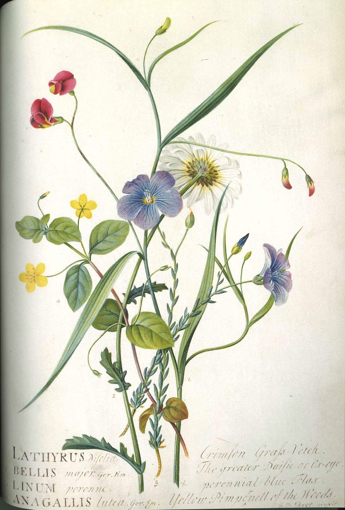

作品名 「ソラマメ、フランスギク、宿根アマ、イエロー・ピンパーネル」
花言葉 「憧れ」「永遠の楽しみ」
ソラマメ
「憧れ」
そら豆は、さやが空に向かって上に伸びる姿からその名が付きました。また、さやの形が蚕に似ていることから蚕豆とも呼ばれます。花言葉「永遠の楽しみ」は、古くから栽培され、これからも人々に美味しく食されていくことからイメージして付けられてのではと言われています。「憧れ」は、そら豆のさやが青空に向かって上に伸びる姿が、空高くまで伸びたいと思っているような、空を飛びたいと憧れているような姿に見えたことが由来とされています。
『ソラマメ、フランスギク、宿根アマ、イエロー・ピンパーネル』
ゲオルク・エーレット
ゲオルク・ディオニシウス・エーレットは、ドイツの植物画家、植物学者、昆虫学者である。ヨハン・ヴィルヘルム・ヴァインマンと知り合い、ヴァインマンの『花譜』の図版も一部描いたが、報酬の支払いを巡ってヴァインマンと仲たがいし、イギリスへ移住して活動をはじめ、ヨーロッパで有名な植物画家の1人に数えられるようになった。エーレットは、しばしば芸術と現実の関係を探求し、その革新的な技法と色彩の使い方が高く評価されている。1735年から1736年の間に、博物学者のカール・フォン・リンネとオランダの銀行家でオランダ東インド会社のジョージ・クリフォード3世に雇われて最初の博物画を描いた。ハールレムの南のクリフォードの屋敷でリンネの『クリフォート邸植物』の図版を描いた。これは初期の植物画の傑作とされている。エーレットの原画は、ロンドン自然史博物館やキュー植物園、王立協会やエアランゲン大学博物館に保存されている。
| 作品名 | ソラマメ、フランスギク、宿根アマ、イエロー・ピンパーネル |
| 作者 | ゲオルク・エーレット |
| 制作年 | 1767年 |
| 所蔵 | ケンブリッジ大学フィッツウィリアム美術館 |